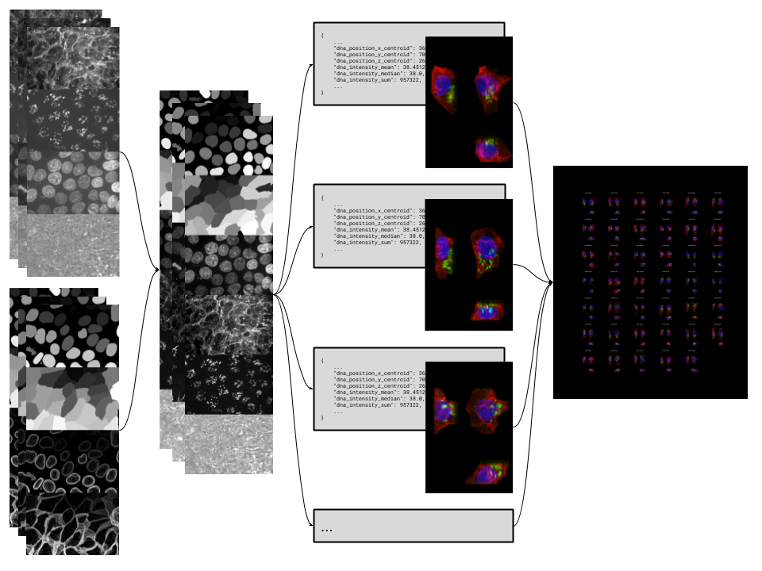

Welcome to actk’s documentation!¶
actk¶
Automated Cell Toolkit
A pipeline to process field-of-view (FOV) microscopy images and generate data and render-ready products for the cells in each field. Of note, the data produced by this pipeline is used for the Cell Feature Explorer.
{kind=link}
Features¶
All steps and functionality in this package can be run as single steps or all together by using the command line.
In general, all commands for this package will follow the format:
actk {step} {command}
stepis the name of the step, such as “StandardizeFOVArray” or “SingleCellFeatures”commandis what you want that step to do, such as “run” or “push”
Each step will check that the dataset provided contains the required fields prior to processing. For details and definitions on each field, see our dataset fields documentation.
An example dataset can be seen here.
Pipeline¶
To run the entire pipeline from start to finish you can simply run:
actk all run --dataset {path to dataset}
Step specific parameters can additionally be passed by simply appending them.
For example: the step SingleCellFeatures has a parameter for
cell_ceiling_adjustment and this can be set on both the individual step run level and
also for the entire pipeline with:
actk all run --dataset {path to dataset} --cell_ceiling_adjustment {integer}
See the steps module in our documentation for a full list of parameters for each step
Pipeline Config¶
A configuration file can be provided to the underlying datastep library that manages
the data storage and upload of the steps in this workflow.
The config file should simply be called workflow_config.json and be available from
whichever directory you run actk from. If this config is not found in the current
working directory, defaults are selected by the datastep package.
Here is an example of our production config:
{
"quilt_storage_bucket": "s3://allencell",
"project_local_staging_dir": "/allen/aics/modeling/jacksonb/results/actk"
}
You can even additionally attach step-specific configuration in this file by using the name of the step like so:
{
"quilt_storage_bucket": "s3://example_config_7",
"project_local_staging_dir": "example/config/7",
"example": {
"step_local_staging_dir": "example/step/local/staging/"
}
}
AICS Distributed Computing¶
For members of the AICS team, to run in distributed mode across the SLURM cluster add
the --distributed flag to the pipeline call.
To set distributed cluster and worker parameters you can additionally add the flags:
--n_workers {int}(i.e.--n_workers 100)--worker_cpu {int}(i.e.--worker_cpu 2)--worker_mem {str}(i.e.--worker_mem 100GB)
Individual Steps¶
actk standardizefovarray run --dataset {path to dataset}, Generate standardized, ordered, and normalized FOV images as OME-Tiffs.actk singlecellfeatures run --dataset {path to dataset}, Generate a features JSON file for each cell in the dataset.actk singlecellimages run --dataset {path to dataset}, Generate bounded 3D images and 2D projections for each cell in the dataset.actk diagnosticsheets run --dataset {path to dataset}, Generate diagnostic sheets for single cell images. Useful for quality control.
Installation¶
Install Requires: The python package, numpy, must be installed prior to the
installation of this package: pip install numpy
Stable Release: pip install actk
Development Head: pip install git+https://github.com/AllenCellModeling/actk.git
Documentation¶
For full package documentation please visit allencellmodeling.github.io/actk.
Published Data¶
For a large-scale example of what this library is capable of, please see the data produced by this pipeline after running our largest cell dataset through it. The data from the Allen Institute for Cell Science created from this pipeline can be found here.
This package contains the source microscopy images, segmentation files, pre-processed single cell images and features, and diagnostic sheets.
Our source images are of endogenously-tagged hiPSC, grown for 4 days on Matrigel-coated 96-well, glass bottom imaging plates. Each field of view (FOV) includes 4 channels (BF, EGFP, DNA, Cell membrane) collected either interwoven with one camera (workflow Pipeline 4.0 - 4.2) or simultaneously with two cameras (Workflow Pipeline 4.4). You can use the file metadata of each image to target the specific channel you are interested in. FOVs were either selected randomly (mode A), enriched for mitotic events (mode B) or sampling 3 different areas of a colony (edge, ridge, center) using a photo protective cocktail (mode C). The images cataloged in this dataset come in several flavors:
Field of view (FOV) images with channels* :
Brightfield
EGFP
DNA
Cell Membrane
Segmentation files with channels:
Nucleus Segmentation
Nucleus Contour
Membrane Segmentation
Membrane Contour
** Some FOV images contain seven channels rather than four. The extra three channels are “dummy” channels added during acquisition that can be ignored.*
The full details of the Allen Institute cell workflow are available on our website
here.
The full details of the Allen Institute microscopy workflow are available on our
website here.
The following is provided for each cell:
Cell Id
Cell Index (from within the FOV’s segmentation)
Metadata (Cell line, Labeled protein name, segmented region index, gene, etc.)
3D cell and nuclear segmentation, and, DNA, membrane, and structure channels
2D max projects for dimension pairs (XY, ZX, and ZY) of the above 3D images
A whole bunch of features for each cell
For the 3D single cell images the channel ordering is:
Segmented DNA
Segmented Membrane
DNA (Hoechst)
Membrane (CellMask)
Labeled Structure (GFP)
Transmitted Light
To interact with this dataset please see the Quilt Documentation.
Development¶
See CONTRIBUTING.md for information related to developing the code.
For more details on how this pipeline is constructed please see cookiecutter-stepworkflow and datastep.
To add new steps to this pipeline, run make_new_step and follow the instructions in
CONTRIBUTING.md
Developer Installation¶
The following two commands will install the package with dev dependencies in editable mode and download all resources required for testing.
pip install -e .[dev]
python scripts/download_test_data.py
AICS Developer Instructions¶
If you want to run this pipeline with the Pipeline Integrated Cell dataset
(pipeline 4.*) run the following commands:
pip install -e .[all]
python scripts/download_aics_dataset.py
Options for this script are available and can be viewed with:
python scripts/download_aics_dataset.py --help
Acknowledgments¶
A previous iteration of this pipeline was created and managed by Gregory Johnson for work with PyTorch Integrated Cell.
This version of this pipeline is more generalized and while still used for the Integrated Cell model, can be used to pre-process a variety of microscopy image datasets.
The previous version of this pipeline produced the pipeline_integrated_single_cell dataset.
**Free software: Allen Institute Software License**